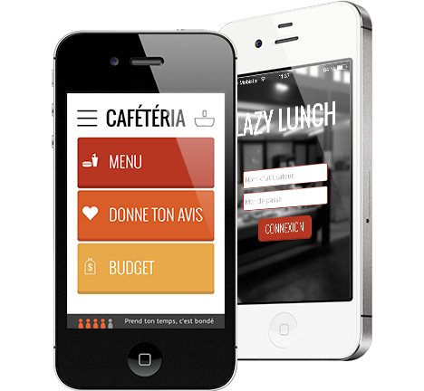

Lazy Lunch

Mobile web application développer dans un cadre pedagogique.
L'application à pour but d'offrir les services proposé à la cafétéria de l'ESIAJ mias en ligne.
Elle permet donc de consulté le menu, vérifié le budget sur votre carte, commander, voter pour la suggestion de la semaine suivante, savoir quand aller faire la file.
Développé grâce à jQuery, Hammer.js